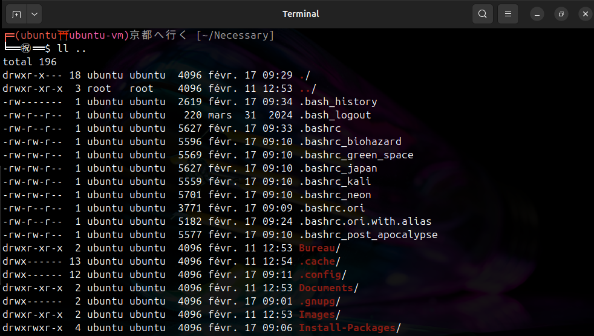

Je ne serai responsable en aucun cas des problèmes rencontrés lors de l'installation des packages sur votre ordinateur que ce soit pendant ou après l'installation. Je vous conseille de lire au complet le script "Script-Install-Packages-Linux.sh", d'une part pour comprendre exactement ce qu'il va faire sur votre ordinateur et d'autre part pour enlever ce que vous ne voulez pas (à vos risques ; soyez sûr de ce que vous faites).
Install-packages est conçu pour pouvoir installer rapidement et facilement plusieurs packages et applications ; idéal sur un nouvel OS fraîchement installé.
Script-Install-Packages-Linux.sh.log est créé dans /var/log/..bashrc, un fichier .bashrc.ori est créé à côté du .bashrc, ils intègrent des petits changements sur le prompt (pour changer de .bashrc lancer la commande cp -f <~/.bashrc_voulu> .bashrc et relancer le prompt ou lancer un source ~/.bashrc) :.bashrc_* | Neon (~/.bashrc_neon) | Japan (~/.bashrc_japan) |
|---|---|
 |
 |
| Post Apacalypse (~/.bashrc_post_apocalypse) | Kali (~/.bashrc_kali) |
 |
 |
| Biohazard (~/.bashrc_biohazard) | Green Space (~/.bashrc_green_space) |
 |
 |
Si vous décidez d'installer de nouveaux thèmes, il génère un changement visuel du prompt que vous pouvez régler via les préférences de votre prompt ; des curseurs et icônes qui sont accessibles via "Tweaks".
chmod +x Script-Install-Packages-Linux.shmemo.txt si besoinLe script a été testé uniquement sur : Ubuntu 22.04 LTS ; Ubuntu 24.04 LTS
Discord et Burpsuite ne sont pas à jour -> Oui je sais, il est possible de devoir faire une mise à jour à la main.